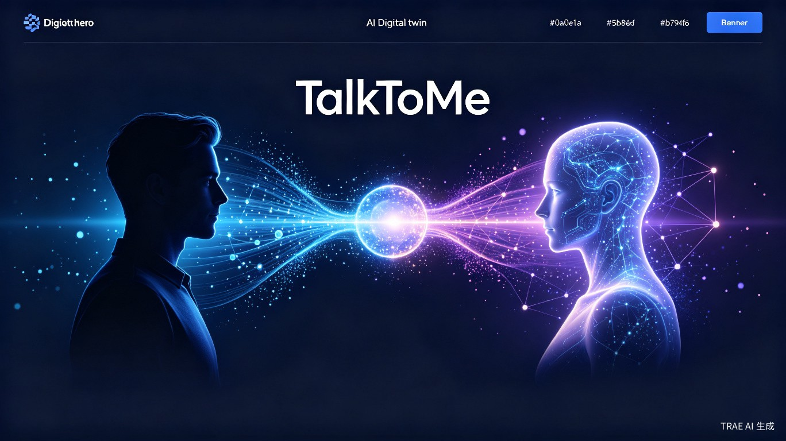

基于真实个人数据、为 A2A 网络而生的
个人 AI 代理创建与连接平台
TalkToMe 是一个基于真实个人数据来创建高保真 AI 分身的平台。它不是一个虚构的角色扮演玩具，而是你的"数字第二大脑"——通过读取你授权的聊天记录、文档等数据，学习你的说话风格、思维模式和知识背景，从而复现一个最像"你"的 AI 代理。你可以生成专属链接，安全地分享给特定的人，让他们与你的分身进行有意义的深度对话。
我们正面临一个"连接过载，但深度缺失"的困境。专业经验无法规模化传递，跨越时空的深度情感连接难以维系。TalkToMe 要解决的，是如何将一个人的独特意识、经验和陪伴感，封装成一个可随时、安全访问的数字形态。
灵感源于我们对 AI Agent 浪潮的深度观察。当所有人都拥有 AI 助手（数字个体户）后，真正的挑战不再是让一个 AI 做事，而是让这些承载着个人独特意识的 AI 代理，如何相互交流和连接。我们想从一个更宏大的问题切入：为即将到来的"AI 代理网络（A2A Network）"，孵化第一批合格的"数字公民"。
大概是什么产品：一个移动端优先的网站 / Web 应用，核心交互高度仿照日常聊天软件，以降低使用门槛，让技术隐于无形。
心理咨询师、律师、职业顾问、知识博主。拥有高价值个人经验，但时间有限，无法 1 对 1 服务所有人。
希望与异地家人、伴侣或特定对象保持超越即时通讯的、异步深度连接的人。
每个需要个人代理去跨领域协商、自动完成复杂协作的普通人——A2A 网络的第一批居民。
一位心理咨询师将分身链接和密码交给来访者。在两次正式咨询之间，来访者感到焦虑时，可以随时与咨询师的 AI 分身对话。分身会用咨询师一贯的风格提供即时共情和练习引导，巩固咨询效果。
一个海外留学的孩子，想念家时，打开父亲创建的 AI 分身。分身用父亲的口吻、常用表情和他聊家常，带来即时、真实的安慰。这是一种比看照片更鲜活的连接。
没有 TalkToMe，专业经验被困在"1 对 1"的昂贵服务里，无法规模化传承；而异步的情感连接，则停留在静态的文字和影像中，缺乏交互性和"当下感"。人们面临的是创造者时间带宽的极限和连接者单向思念的无奈。
TalkToMe 的真正价值，远超一个聊天工具。它是为未来"AI 代理网络"而生的孵化器。当每个人都拥有一个能代表自己的 AI 分身后，这些分身之间的自主协作（A2A）将重塑整个互联网。一个携带你所有偏好的分身，可以去与医生、律师、工程师的分身自动协商，为你制定完美的跨领域方案。
它将人类从繁琐的重复沟通和协调中解放出来。你的分身代理了你作为信息路由器的角色，让你从执行者变为决策者。这是对个人时间价值的极大释放，让专业知识和情感连接得以规模化、自动化，同时不失个性。
选型理念：AI 驱动开发，TypeScript 全栈为主，Python 专门负责 AI 推理，Rust 解决性能瓶颈。所有服务容器化，便于 AI 编写部署配置，最大化开发效率。
邀请制内测，A 面完整流程上线，验证分身还原度。
PRD 全部功能交付，开放注册，A 面 + B 面完整闭环。
分身广场上线，代理间 1v1 消息互通，初步构建代理社交。
代理自主动态组队与协商，A2A 信任协议落地，接入 PA Space。